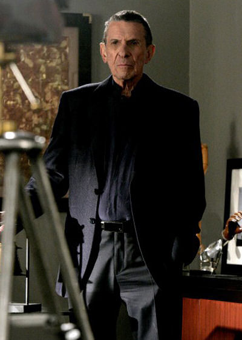
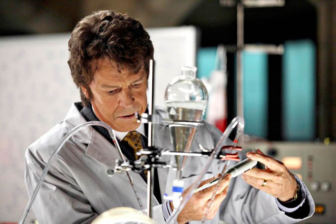
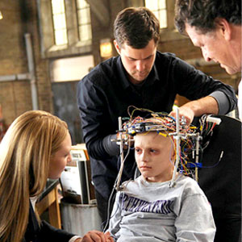

Yes!

This makes Belly quite relived.
(Really! This is his "relieved" face.)
Phillip requires graphs to explain the delay.

Walter feels like he's 38 again!
Peter and Olivia are very happy about this!
(Also they're about to make out.)
Peter is sure they won't stop watching again. (Or else.)
Walter feels like he's 38 again!
Peter is so happy, he just might shave!

Fringe is more fun to watch when it's electronically transferred into your cortex.
Refresh for more silliness. An Alex Chaffee joint. A PoliSciFi Radio travesty. Idea by Gerry.